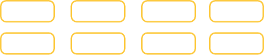

Tudo que o seu servidor do
Discord precisa
Conheça seus bots favoritos
Conheça o Brother 408
Se você não o conhece, deixe-me apresentá-lo.
O Brother 408 é um bot que irá entreter o seu servidor.
Mas como assim ?
Ele tem funções variadas, em sua maioria focadas no entretenimento.
Comandos, como lhe dar um conselhos, apresentar um fato curioso aleatório, contar uma piada do Chuck Norris etc.
Está passando por uma situação e gostaria de saber o que o Kanye West diria de conselho ?
Ele te dirá
Está com um tédio descomunal e precisa resolver isso ?
Ele irá te ajudar nisso também!
Gosta de Pokémon ?
O Brother 408 é praticamente uma Pokedéx no seu servidor!
Ele retorna com um só comando informações como:
- Tipo do Pokémon
- Cadeia de evolução
- Habilidades
- Estatísticas de: vida, ataque, defesa, ataque especial, defesa especial e velocidade.
- Em que tipo de Pokémon ele receberá o dobro de dano, não receberá dano ou metade do dano
- E também qual tipo de Pokémon ele dará o dobro de dano, não dará dano ou dará metade de dano
- Movimentos
Comandos do Brother 408
Quer adicionar o Brother 408 ?
Ele está pronto para tudo no seu servidor
Vos apresento o DJ 408
Está precisando animar seu servidor ?
Colocar uma música de fundo então joga com os amigos ?
ou até mesmo ouvir uma música com seus amigos ?
Então esse é o Bot que seu servidor está precisa!
O DJ 408 está pronto para tocar suas playlists e músicas.
Comandos do DJ 408
Quer adicionar o DJ 408 ?
Ele está pronto para tudo no seu servidor
Com vocês: Economista 408
Conhece a expressão "tempo é dinheiro" ?
Pois é, ela, felizmente ou infelizmente, é uma realidade.
E já pensou em ter reunido em um só lugar informações em tempo real sobre cotações de moedas, notícias sobre finanças e até mesmo cotações de ações ?
Com o bot Economista 408 você pode realizar comandos sobre esses assuntos e obter respostas atualizadas, rápidas e em tempo real.
Ele possibilita retornar informações sobre cotação do dólar, euro, Bitcoin em real e Bitcoin em dólar.